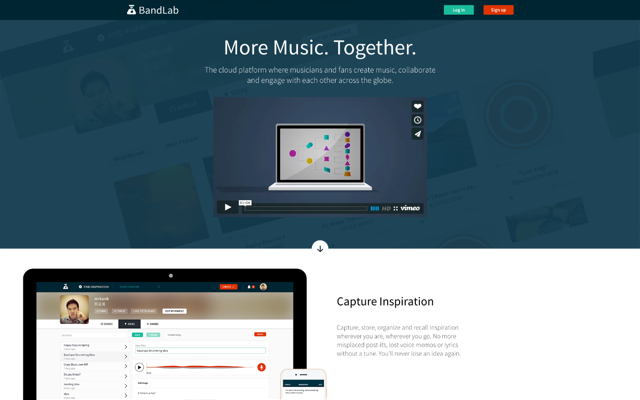

BandLab (2015)
Social network aimed at musicians built as a single-page application with Angular. Additionally to common social features, Bandlab provides also audio recording and editing tools implemented above Web Audio API.
- Gulp for automating tasks (after switching from Grunt)
- Git for control versioning
- Github for code review
- Slack for team collaboration
- Jira for bug tracking